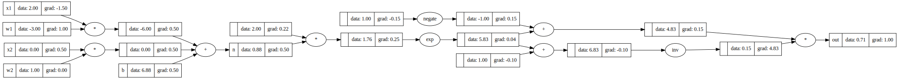
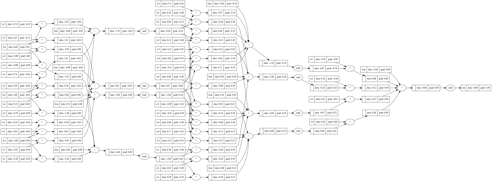

A literate Julia translation of Andrej Karpathy’s micrograd, following his video lecture.
Derivatives
The goal of this exercise is to compute derivatives across a neural network. The idea is that we compute a value of some very complicated function in a forward pass, and then, traversing backward through the tree, we can infer (cheaply) the gradient of the output with respect to input variables.
We start by learning about derivatives, usually defined as the rate of increment in a function in the limit where some step-size goes to zero:
\[\partial_x f(x) := \lim_{h \to 0} {f(x+h) - f(x) \over h}.\]
For functions of a single parameter, we may also write \(\partial_x f(x) = f'(x)\), allowing us to sometimes drop the gratuitous \(x\) from our notation (it’s a dummy free variable). From this definition we can compute the derivative of composite functions analytically.
Sum rule
Given \(f = u + v\), we may see from the linearity in the definition of the derivative that,
\[(u+v)' = u' + v'.\]
Product rule
Given \(f = uv\), things get a bit more complicated. First of all, we need to see that inside the limit we can write,
\[\lim_{h \to 0} \Big[f'(x) = {f(x+h) - f(x) \over h}\Big],\]
therefore, \[\lim_{h \to 0} \Big[f(x+h) = f(x) + h f'(x)\Big].\]
Then if we follow the definition and write out \(f'\) for \(f=uv\),
\[f'(x) = \lim_{h \to 0} {u(x+h)v(x+h) - u(x)v(x) \over h},\]
and taking \(v(x+h) \approx v(x) + h v'(x)\),
\[\begin{align}f'(x) &= \lim_{h \to 0} {u(x+h) (v(x) + h v'(x)) - u(x) v(x) \over h}\\ &= \lim_{h \to 0} {u(x+h) v(x) + u(x+h) h v'(x) - u(x) v(x) \over h}\\ &= \lim_{h \to 0} \Big[ v(x) {u(x+h) - u(x) \over h} + u(x+h) v'(x) \Big]\\ &= v(x)u'(x) + u(x) v'(x).\end{align}\]
In the last step, using that in the limit \(u(x+h) = u(x)\). In short,
\[(uv)' = u'v + uv'.\]
Chain rule
Now we have a function \(f = u \circ v\), meaning
\[f(x) = u(v(x)).\]
Then, writing out the definition and again replacing \(v(x+h)\), we recover the definition of the derivative of \(u\), evaluated at \(y=v(x)\), if we multiply by \(v'(x)\) on both sides of the fraction.
\[\begin{align}f'(x) &= \lim_{h \to 0} {u(v(x+h)) - u(v(x)) \over h}\\ &= \lim_{h \to 0} {u(v(x) + hv'(x)) - u(v(x)) \over h}\\ &= \lim_{h \to 0} {(u(v(x) + hv'(x)) - u(v(x)))v'(x) \over hv'(x)}\\ &= \lim_{h \to 0} {u(y + \tilde{h}) - u(y) \over \tilde{h}} v'(x)\\ &= u'(v(x)) v'(x).\end{align}\]
In short,
\[(u \circ v)' = (u' \circ v) v'\]
Wikipedia gives us another nice proof, based on a different definition of differentiation. We say a function \(f\) is differentiable in \(a\) if there exists a function \(q\) such that
\[f(x) - f(a) = q(x)(x - a),\]
and \(f'(a) = q(a)\). Then, given that \(f = u \circ v\),
\[\begin{align}u(v(x)) - u(v(a)) &= q(v(x))(v(x) - v(a))\\ &= q(v(x))r(x)(x - a),\end{align}\]
Meaning that \(f'(a) = q(v(a))r(a)\), where \(q(v(a)) = u'(v(a))\) and \(r(a) = v'(a)\). Ok, with that out of the way, we can implement the first tiny version of an automatic differentating back propagation.
Computation
We define the a data structure that traces a computation.
«value»
mutable struct Value{T}
value :: T
operator :: Symbol
children :: Vector{Value{T}}
grad :: T
label :: Union{String, Nothing}
end
Value{T}(value::T, operator::Symbol, children::Vector{Value{T}}) where T =
Value(value, operator, children, zero(T), nothing)Now we add methods to perform addition and multiplication on Values. These implementations make sure that sum-nodes are joined into larger sum-nodes, likewise with product-nodes.
«value»
function Base.:+(a :: Value{T}, b :: Value{T}) where T
Value{T}(a.value + b.value, :+, [(a.operator == :+ ? a.children : a);
(b.operator == :+ ? b.children : b)])
end
function Base.:*(a :: Value{T}, b :: Value{T}) where T
Value{T}(a.value * b.value, :*, [(a.operator == :* ? a.children : a);
(b.operator == :* ? b.children : b)])
endTo create a literal value, say an input:
«value»
function literal(value :: T) where T
Value{T}(value, :const, Value{T}[])
endTo add a label to a value, we’ll have a nice |> label("x") syntax.
«value»
function label(l :: String)
v -> begin v.label = l; v end
endTopological sort
Computing with Values will generate, along with a result a dependency graph that shows exactly how we arrived at the result. We will be walking this graph up and down, which is why it is a usefull thing to have a function that iterates all nodes in topological order.
Topological order meaning: assign a number to each node, starting with the root node (being the final operation). We assign to its children a number one greater than the parent. If a child has multiple parents we should take the largest value. If we then evaluate the nodes from highest number down to the root, we are sure that at every stage all the necessary dependencies are already computed.
Karpathy glosses over the definition of this function. A naive implementation (like I started out with) will make the mistake of putting nodes in the wrong order. Karpathy shows a recursive algorithm. An alternative is a marking approach, where we do not add a node until all outgoing edges have been accounted for. This however, also requires us to keep track of outgoing nodes. For the moment, the recursive algorithm will do.
«topo-sort»
function topo_sort(node, children = n -> n.children, visited = nothing)
visited = isnothing(visited) ? [] : visited
Channel() do chan
if node ∉ visited
push!(visited, node)
for c in children(node)
foreach(n->put!(chan, n), topo_sort(c, children, visited))
end
put!(chan, node)
end
end
endSpecial iterator: this_and_others
I supposed that, from some generality concerns, we could have combinators with more than two children. In that case, we’d like to iterate over each child, together with all their siblings (excluding the child). This is why I made an iterator that does just that this_and_others. Given a Vector{T} it yields pairs of an element and a vector containing the other elements.
«this-and-others»
function this_and_others(v :: Vector{T}) where T
Channel() do chan
for (idx, x) in enumerate(v)
put!(chan, (x, [v[1:idx-1];v[idx+1:end]]))
end
end
endDerivatives
We previously derived the sum and product rules for differentiation. When written in this form, they become rather obvious. What was all the fuss about?
«backpropagate»
const derivatives = IdDict(
:* => (_, others) -> reduce(*, others),
:+ => (_, _) -> 1.0,
<<derivatives>>
)Now, it is a matter of walking the evaluation tree backward. Here we find the topo_sort routine to be useful.
«backpropagate»
function backpropagate(v :: Value{T}) where T
v.grad = one(T)
for n in Iterators.reverse(collect(topo_sort(v)))
for (c, others) in this_and_others(n.children)
c.grad += n.grad * derivatives[n.operator](c.value, map(x -> x.value, others))
end
end
endNote, that a value may be used in several subexpressions, creating a diamond dependency diagram. In such a case, we want to add all contributions from different branches. This is why we find c.grad += ... there.
First example
«example-1»
a = literal(2.0) |> label("a")
b = literal(3.0) |> label("b")
c = literal(10.0) |> label("c")
d = a * b + c * a |> label("d")file:src/example1.jl
using Printf: @printf
<<value>>
<<this-and-others>>
<<topo-sort>>
<<backpropagate>>
function main()
<<example-1>>
@printf "%s = %f\n" d.label d.value
backpropagate(d)
@printf "∂_%s d = %f\n" a.label a.grad
print(collect(topo_sort(d)) .|> x -> x.label)
end
main()Giving
d = 26.000000
∂_a d = 13.000000Plotting tree in graphviz
Julia has a module for interaction with Graphviz, but it requires input in dot language, so this module is next to useless. We can do better.
«visualize»
function visualize(v::Value{T}) where T
g = digraph(; rankdir="LR")
for n in topo_sort(v)
objid = repr(hash(n))
objlabel = (isnothing(n.label) ? "" : n.label)
reclabel = @sprintf "{ %s | data: %0.2f | grad: %0.2f }" objlabel n.value n.grad
g |> add_node("dat_" * objid; shape="record", label=reclabel)
if (n.operator !== :const)
g |> add_node("op_" * objid; label=String(n.operator)) |>
add_edge("op_" * objid, "dat_" * objid)
end
for c in n.children
childid = repr(hash(c))
g |> add_edge("dat_" * childid, (n.operator !== :const ? "op_" : "dat_") * objid)
end
end
g
end
A Neuron
The neuron takes many inputs and then computes a weighted sum over those inputs, and passes the results through an activation function:
\[f(x_i) = {\rm sig} \Big[ \sum w_i x_i + b \Big].\]
In this case, the activation function is some sigmoid.

«value»
function Base.tanh(v::Value{T}) where T
Value{T}(tanh(v.value), :tanh, [v])
end«derivatives»
:tanh => (value, _) -> Base.Math.sech(value)^2,«example-2»
x1 = literal(2.0) |> label("x1")
x2 = literal(0.0) |> label("x2")
w1 = literal(-3.0) |> label("w1")
w2 = literal(1.0) |> label("w2")
b = literal(6.8813735870195432) |> label("b")
n = x1*w1 + x2*w2 + b |> label("n")
o = tanh(n) |> label("out")
backpropagate(o)
Multi-path dependencies
«example-3»
a = literal(1.0) |> label("a")
b = a + a |> label("b")
backpropagate(b)
More derivatives
We want more derivatives!
«derivatives»
:inv => (x, _) -> -1/x^2,
:log => (x, _) -> 1/x,
:exp => (x, _) -> exp(x),
:negate => (_, _) -> -1.0,Now we can add more operators.
«value»
function Base.convert(::Type{Value{T}}, x :: T) where T
literal(x)
end
function vmap(f, operator::Symbol, value::Value{T}) where T
Value{T}(f(value.value), operator, [value])
end
Base.:*(s::U, a::Value{T}) where {T, U <: Number} = convert(Value{T}, convert(T,s)) * a
Base.inv(a::Value{T}) where T = vmap(inv, :inv, a)
Base.:/(a::Value{T}, b::Value{T}) where T = a * inv(b)
Base.exp(a::Value{T}) where T = vmap(exp, :exp, a)
negate(a::Value{T}) where T = vmap(-, :negate, a)
Base.:-(a::Value{T}) where T = negate(a)
Base.:-(a::Value{T}, b::Value{T}) where T = a + negate(b)
Base.:-(a::Value{T}, b::U) where {T, U <: Number} = a - literal(convert(T,b))
Base.:+(a::Value{T}, b::U) where {T, U <: Number} = a + literal(convert(T,b))Now we could say \(\tanh x = (\exp(2x) - 1) / (\exp(2x) + 1)\)
«example-4»
mytanh(x) = begin y = exp(2*x); (y - 1) / (y + 1) end
x1 = literal(2.0) |> label("x1")
x2 = literal(0.0) |> label("x2")
w1 = literal(-3.0) |> label("w1")
w2 = literal(1.0) |> label("w2")
b = literal(6.8813735870195432) |> label("b")
n = x1*w1 + x2*w2 + b |> label("n")
o = mytanh(n) |> label("out")
backpropagate(o)
Building a neural net
Neuron
«neuron»
struct Neuron{T}
weights :: Vector{Value{T}}
bias :: Value{T}
end
Neuron{T}(n::Int) where T <: Real =
Neuron{T}(
[literal(rand() * 2 - 1) |> label("w$(i)") for i in 1:n],
literal(rand() * 2 - 1) |> label("bias"))
function (n::Neuron{T})(x::Vector{Value{T}}) where T <: Real
tanh(sum(n.weights .* x; init = n.bias))
endLayer
«layer»
struct Layer{T}
neurons :: Vector{Neuron{T}}
end
Layer{T}(n_in::Int, n_out::Int) where T <: Real =
Layer{T}([Neuron{T}(n_in) for _ in 1:n_out])
function (l::Layer{T})(x::Vector{Value{T}}) where T <: Real
[n(x) for n in l.neurons]
endMulti-layer perceptron
«mlp»
struct MLP{T}
layers :: Vector{Layer{T}}
end
pairs(it) = zip(it[1:end-1], it[2:end])
MLP{T}(n_in::Int, n_out::Vector{Int}) where T <: Real =
MLP{T}([Layer{T}(s...) for s in pairs([n_in; n_out])])
function (mlp::MLP{T})(x::Vector{Value{T}}) where T <: Real
for l in mlp.layers
x = l(x)
end
x
endfile:src/neural_net.jl
using Printf: @sprintf
include("Graphviz.jl")
using .Graphviz: Graph, digraph, add_node, add_edge, add_attr
<<value>>
<<this-and-others>>
<<topo-sort>>
<<backpropagate>>
<<visualize>>
<<neuron>>
<<layer>>
<<mlp>>
function main()
f = MLP{Float64}(3, [4, 4, 1])
y = f([literal(1.0) |> label("in1"),
literal(2.0) |> label("in2"),
literal(4.0) |> label("in3")])[1] |> label("out")
backpropagate(y)
print(visualize(y))
end
main()
Appendix: Graphviz module
For those interested, here’s the source for Graphviz.jl.
file:src/Graphviz.jl
module Graphviz
@enum GraphComponent c_graph c_node c_edge
const component_name = IdDict(
c_graph => "graph",
c_node => "node",
c_edge => "edge"
)
Base.show(io :: IO, c :: GraphComponent) = print(io, component_name[c])
@enum CompassPt c_n c_ne c_e c_se c_s c_sw c_w c_nw c_c c_empty
const compass_symb = IdDict(
c_n => "n", c_ne => "ne", c_e => "e", c_se => "se", c_s => "s",
c_sw => "sw", c_w => "w", c_nw => "nw", c_c => "c", c_empty => "_"
)
Base.show(io :: IO, c :: CompassPt) = print(io, compass_symb[c])
abstract type Statement end
struct Subgraph <: Statement
name :: Union{String, Nothing}
stmt_lst :: Vector{Statement}
end
struct AList
content :: IdDict{Symbol,String}
end
function Base.show(io :: IO, alst :: AList)
for (k, v) in pairs(alst.content)
print(io, k, "=\"", v, "\";")
end
end
struct NodeId
name :: String
port :: Union{String,Nothing}
end
struct NodeStmt <: Statement
id :: NodeId
attr_list :: Vector{AList}
end
NodeOrSubgraph = Union{NodeId,Subgraph}
function Base.show(io :: IO, n :: NodeId)
print(io, "\"", n.name, "\"")
if !isnothing(n.port)
print(io, n.port)
end
end
function Base.show(io :: IO, n :: NodeStmt)
print(io, n.id)
for a in n.attr_list
print(io, "[", a, "]")
end
end
struct EdgeStmt <: Statement
is_directed :: Bool
from :: Union{NodeId,Subgraph}
to :: Vector{Union{NodeId,Subgraph}}
attr_list :: Vector{AList}
end
function Base.show(io :: IO, e :: EdgeStmt)
print(io, e.from)
for n in e.to
print(io, e.is_directed ? "->" : "--", n)
end
for a in e.attr_list
print(io, "[", a, "]")
end
end
struct AttrStmt <: Statement
component :: GraphComponent
attr_list :: Vector{AList}
end
function Base.show(io :: IO, a :: AttrStmt)
print(io, component_name[a.component])
for attr in a.attr_list
print(io, "[", attr, "]")
end
end
struct IdentityStmt <: Statement
first :: String
second :: String
end
function Base.show(io :: IO, i :: IdentityStmt)
print(io, i.first, "=\"", i.second, "\"")
end
function Base.show(io :: IO, s :: Subgraph)
print(io, "subgraph ")
if !isnothing(s.name)
print(io, s.name, " ")
end
print(io, "{\n")
for s in s.stmt_lst
print(io, " ", s, ";\n")
end
print(io, "}\n")
end
mutable struct Graph
is_strict :: Bool
is_directed :: Bool
name :: Union{String, Nothing}
stmt_list :: Vector{Statement}
end
function Base.show(io :: IO, g :: Graph)
print(io, g.is_strict ? "strict " : "",
g.is_directed ? "digraph " : "graph ",
!isnothing(g.name) ? name * " " : "",
"{\n")
for s in g.stmt_list
print(io, " ", s, ";\n")
end
print(io, "}\n")
end
function graph(name = nothing; kwargs ...)
Graph(false, false, name, []) |> add_attr(c_graph; kwargs ...)
end
function digraph(name = nothing; kwargs ...)
Graph(false, true , name, []) |> add_attr(c_graph; kwargs ...)
end
strict(g :: Graph) = begin g.is_strict = True; g end
function add_node(id :: String, port :: Union{String, Nothing} = nothing; kwargs ...)
g -> begin push!(g.stmt_list, NodeStmt(NodeId(id, port), [AList(kwargs)])); g end
end
function add_edge(from :: String, to :: String ...; kwargs ...)
add_edge(NodeId(from, nothing), NodeOrSubgraph[NodeId(n, nothing) for n in to]; kwargs ...)
end
function add_edge(from::NodeOrSubgraph, to::Vector{NodeOrSubgraph}; kwargs ...)
g -> begin push!(g.stmt_list, EdgeStmt(g.is_directed, from, to, [AList(kwargs)])); g end
end
function add_attr(comp :: GraphComponent; attrs ...)
g -> begin push!(g.stmt_list, AttrStmt(comp,[AList(IdDict(attrs))])); g end
end
end